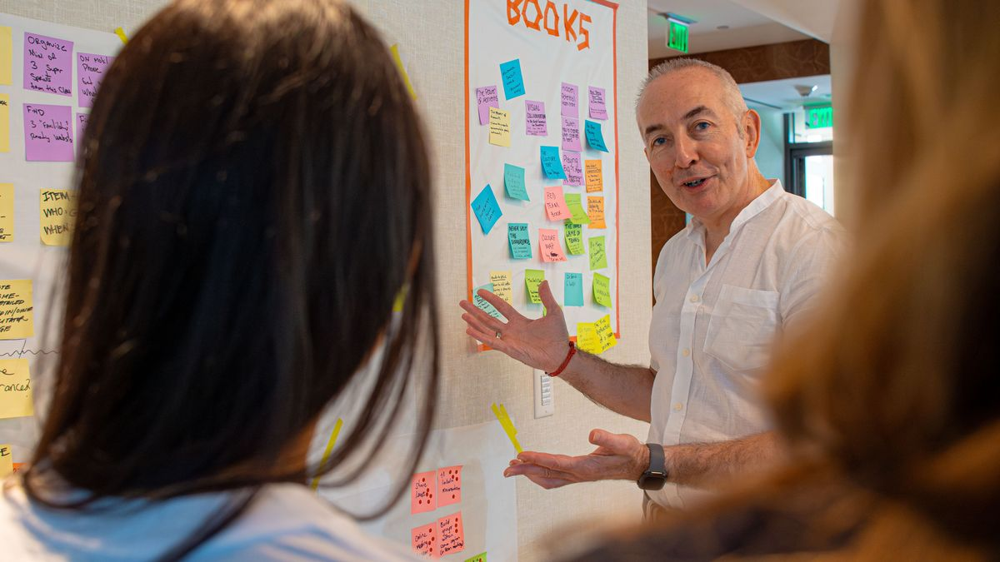
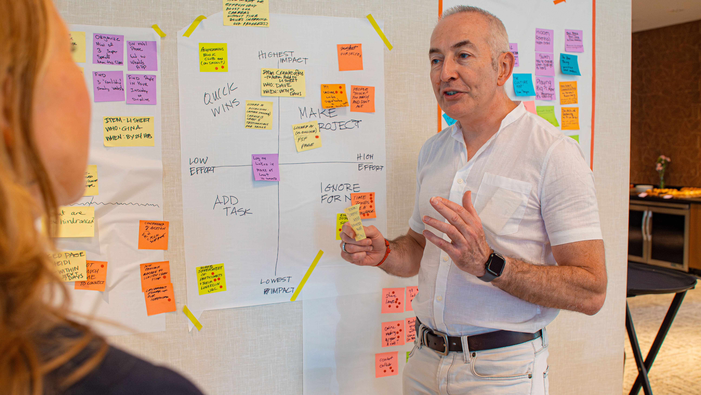
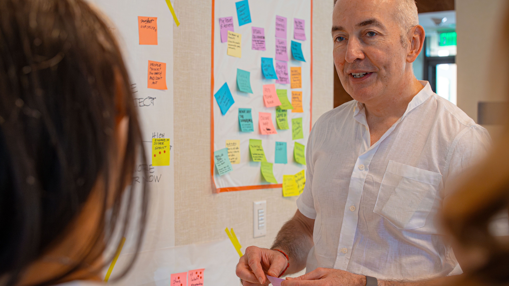
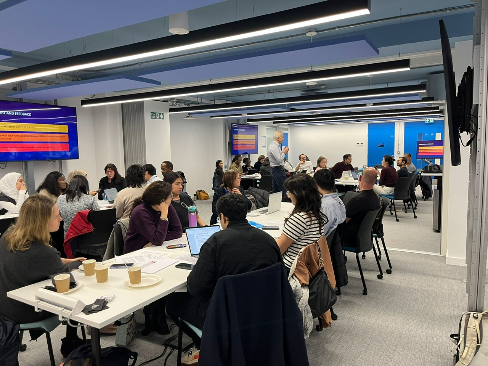
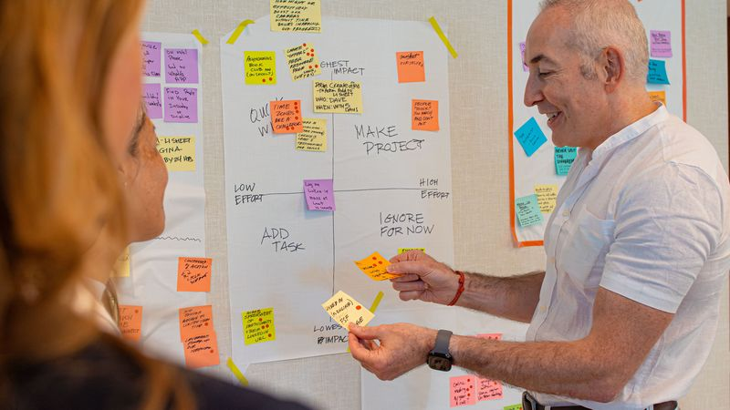
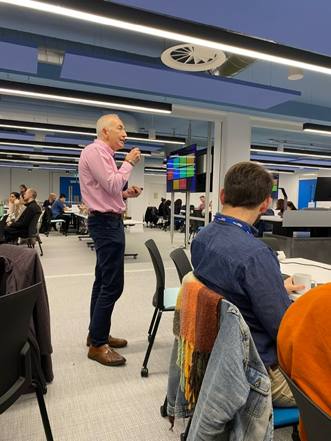
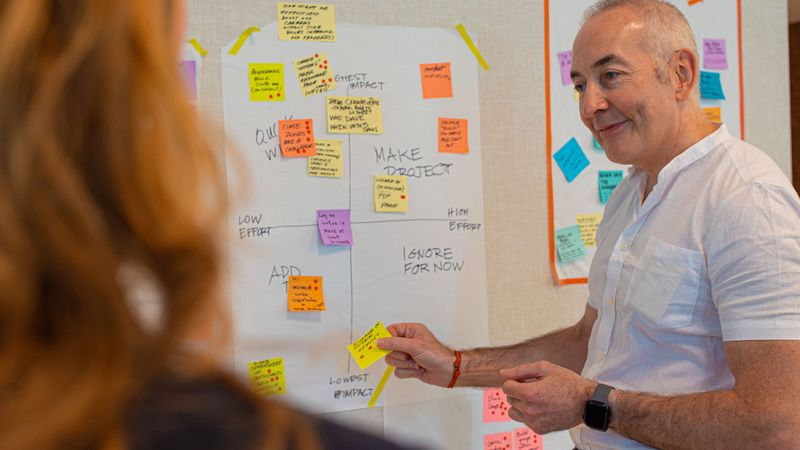

We design and run high-stakes leadership sessions - strategy offsites, exec alignment workshops, and decision-critical meetings - that produce a decision log, named owners, and a 30-day execution plan.

The yearly cost for large companies on pointless meetings
Bloomberg, 2022of senior managers say meetings prevent them completing work
Harvard Business Review, 2017of decision-makers feel collaboration needs improvement
Forrester Research, 2021of meetings are considered unproductive by attendees
Harvard Business Review, 2022The fix? Expert facilitation.
A skilled facilitator transforms unproductive meetings into sessions that produce real decisions, clear ownership, and measurable outcomes.
Decisions get made - then unmade in the corridor. Priorities shift without anyone naming the trade-off.
That’s not a talent problem. It’s a facilitation problem.

Five steps from discussion to documented, owned decisions.
Pre-session calls to map the real constraint - not the stated agenda.
Structured exercises that bypass groupthink and anchoring.
For every priority: what stops or slows for this to happen?
Named owner, deadline, and success criteria for every item.
Decision log, priority map, and 30-day review framework.




Every engagement is tailored. These examples show the kinds of outcomes we deliver - your session will be custom-designed after our discovery call.
Best for: Exec teams with competing priorities
From competing agendas to a single, written set of priorities with named owners and 30-day execution commitments.
Best for: Annual planning, strategic reset, or mid-year pivot
Your leadership team steps back to align around a shared vision and produce a clear actionable plan with explicit trade-offs.
Best for: New products, services, or processes needing rapid validation
From concept to tested prototype in days, not months. Time-boxing eliminates analysis paralysis and replaces debate with evidence.
